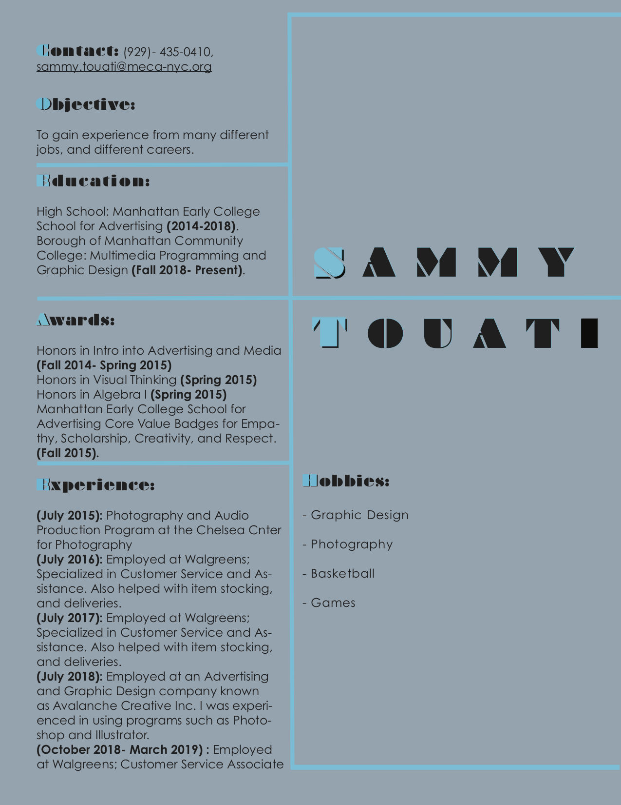

Home
Design #1: Animated Self Portrait
Design #2: Resume Redesign
Design #3: Typography Poster
Contact Me
Resume Redesign:
This is a redesign of my resume in which I made in one of my past Typography classes. I used Adobe Indesign, to change the fonts of the texts, and make the typefaces stand out and change the resume in a design aspect.
